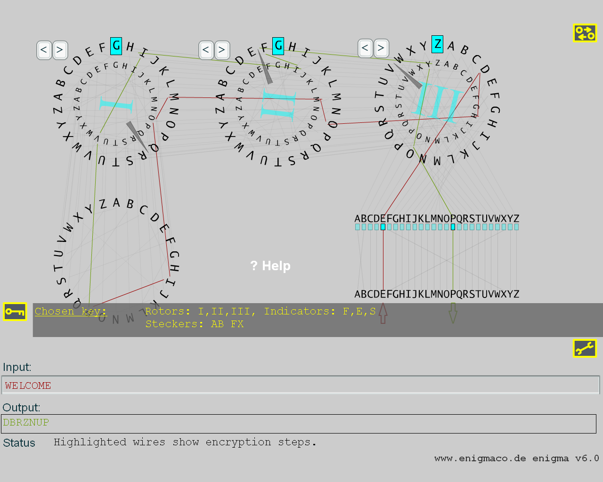

History
The rotor machine "Enigma" was brought to this world in 1923 by the German engineer Arthur Scherbius. It was meant to serve as a means to encrypt messages in the economy area. In the 1930s, the German army discovered the Enigma, added the so-called plugboard and changed the rotor wiring. During WW II, the German military used about 200,000 of these cryptosystems in order to scramble the messages they exchanged with each other.
Construction and function
The Enigma constists, in its main parts, of the plugboard, the three rotors and the reflector which was meant to redirect the electrical current. The original Enigma matched every letter that was entered by means of the keyboard with an encrypted letter by closing an electrical circuit that is reconfigured after each key entry.
The graphical display of the different Enigma components
The alignment of the three rotors is according to the Enigma's original construction: The first rotor ("fast rotor" changing its position with each letter entry) is the rightmost one. The roman number in the center of each rotor indicates which of the five rotor possibilities was chosen (I, II, III, IV or V). The rotor wirings that you see in my model are exactly the same as in the original Enigma.
Prerequesites
You need a fast system, a resolution of at least 800x600 pixels, true colors and a Flash plug-in (version 7 or newer).
A brief example
Open the machine window, click on the "Input:" textbox and enter "c" on the keyboard. The plugboard leaves C as C while highlighting the specific wire in red. The electrical current then moves to the rightmost rotor, that is, to its letter A. A is then connected to B. The current enters the middle rotor, that connects G with R. The third (leftmost) rotor maps V to I. In the next step, the reflecor maps B to R. Then the current moves way back along the green wires through the rotors back to the plugboard, where Q leads to Q. As a result, we have the encryption of C to Q.
If you now enter "c" again, you see that in this case it yields G! This is because the rightmost rotor moves one step to the left before a letter is entered.
Special case: Whenever the right rotor moves from V to W, the second rotor is also changing its position by one step. This holds true for the middle rotor accordingly. All in all, the rotors behave like an odometer.
How can I encrypt a plaintext?
At first you have to make up a key. In this case, a key consists of two parts, at first you decide, which pairs of letters should be exchanged in the plugboard, e.g. A to B and also F to X. Secondly, choose the rotor settings at the beginning of the text entry, e.g. F-E-S. Click "RESET" which puts the whole machine to the "initial state". Now you can encrypt a first sample.
Now drag the small yellow circle underneath A to B and release the mouse button. Thus, you have exchanged A and B. Please exchange F and X in that same way.
The mentioned rotor settings are set by pressing the buttons "<" or ">" above each specific rotor. Each mouse click puts a rotor one position forward in the indicated direction.
Now key in "welcome". The line "Output:" should show "DBRZNUP", the ciphertext. Except for the pure number of letters, the encrypted text looks completely different.

How do I decrypt a text?
Did I mention that we are dealing with a symmetric encryption system here? Well, that is the case. Symmetric encryption means that for encryption and decryption you need exactly the same key. To prove this in our example, keep the cypertext "DBRZNUP" in mind, clear the entry in the "Input:" row and key in the above cypher text. It yields "WELCOME", which is the right plaintext.
Limitations to this model
For those among you who want to know some more details about the Enigma, I do not want to hide some simplifications I put into place here. The original Enigma also allowed for changing its so-called ring settings, which implememted a shift in the alphabet by up to 25 letters.
Finally, there was the four rotor Enigma that was developed in the late years of WW II in order to protect the U-boat messages even better.
Links
Talking about the similarity of simulations in comparison to the real Enigma I want to recommend this link (powered by Java instead of Flash). You can compare the codes of the two simulators, please keep in mind that in the applet, you have to choose reflector "B" in the "Advanced Settings" pane in order to match my Flash simulation. The "C" reflector was used in the M4-Enigma having four rotors.
Another interesting website is Jim Oram's www.enigma-replica.com, where you can see Jim's project to reconstruct the four-rotor Enigma (M4).